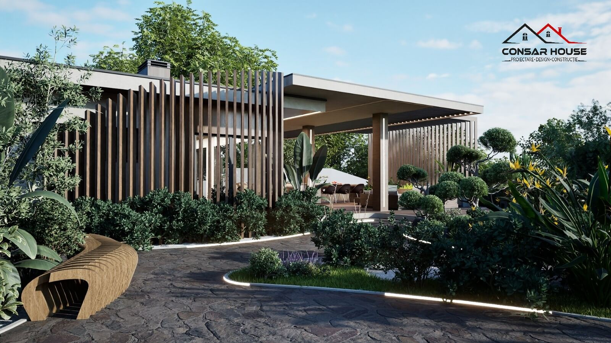
Casa S+P+1
Integrare în Pădure
Un proiect definit de fluiditatea spațiilor interioare și orientarea optimă față de punctele cardinale.
- Locație
- Brașov, România
- Suprafață utilă
- 240 m²
- An proiect
- 2025
- Faza atinsă
- D.T.A.C. + Proiect Tehnic
- Echipa de proiectare
- Arh. Andrei Popescu, Arh. Maria Ionescu — Structură: Ing. Radu Vasile — Instalații: Ing. Elena Dumitrescu
Tema de proiectare și abordarea conceptuală
Povestea
Proiectului
Provocarea inițială
Terenul, situat pe o parcelă atipică în pantă ușoară la marginea unei păduri de conifere, a venit cu trei constrângeri majore: orientarea neregulată a laturilor față de punctele cardinale, un front stradal îngust și dorința beneficiarului de a maximiza lumina naturală fără a sacrifica intimitatea. Forma neregulată a parcelei impunea o abordare atentă a retragerilor față de limitele laterale.
Soluția de Arhitectură
Am optat pentru o organizare longitudinală, cu zona de zi dezvoltată pe direcția est-vest, captând lumina de sud prin vitraje generoase protejate de o consolă care asigură umbrirea naturală vara. Circulația a fost gândită fără coridoare inutile: livingul, diningul și bucătăria comunică direct, iar scara centrală devine elementul de articulare între parter și etajul dedicat zonei de noapte.
“În acest proiect, am urmărit să creăm o trecere naturală între interior și exterior, reducând la minimum spațiile de tranziție neutilizate — coridoarele — pentru a maximiza zona de zi.”— Arh. Andrei Popescu, CONSARHOUSE
Relația cu exteriorul și volumetria
Exteriorul
Clădirii
Fațadele combină betonul aparent cu lambriuri din lemn de cedru și tâmplărie aluminiu-negru, asigurând o imagine sobră și un contrast natural cu fondul forestier. Volumul este fragmentat în două registre distincte — soclul masiv și cutia vitrată de deasupra — pentru a reduce impactul vizual.
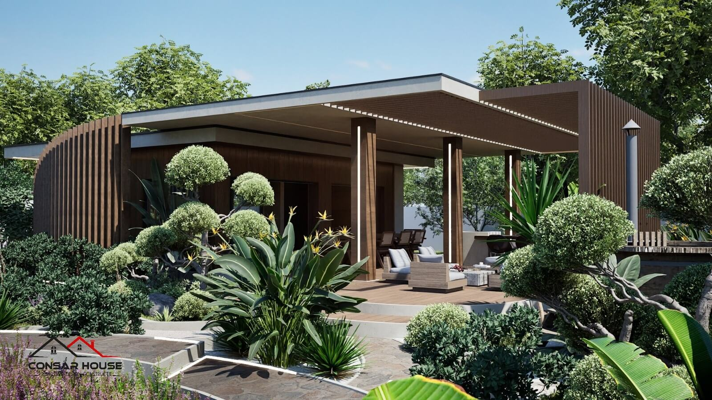
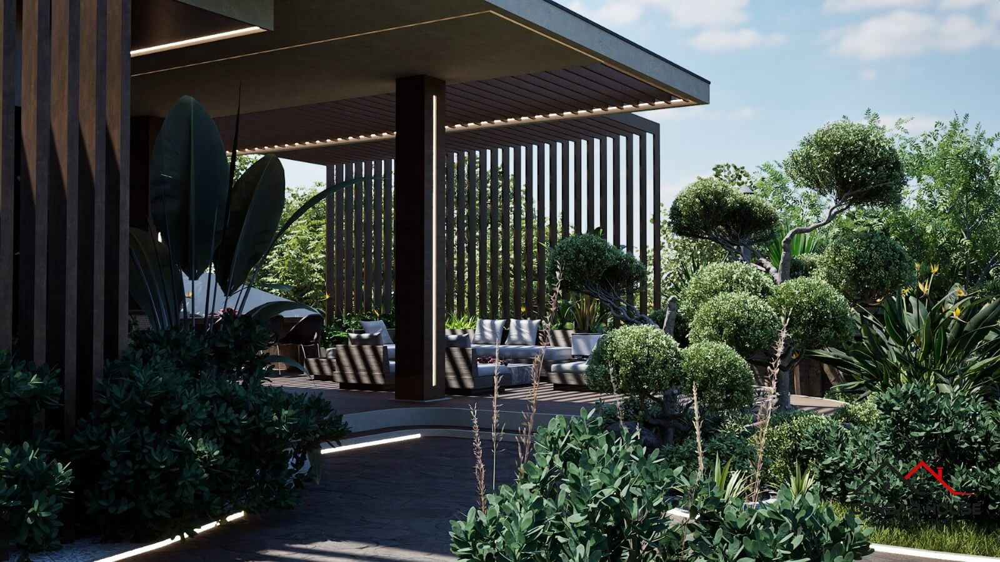
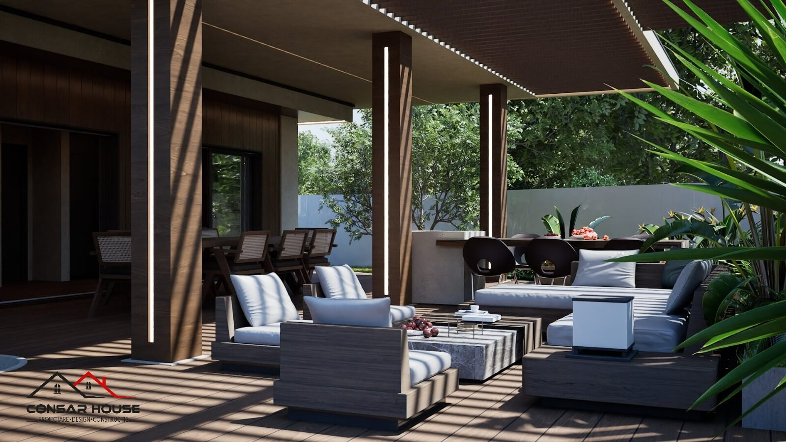
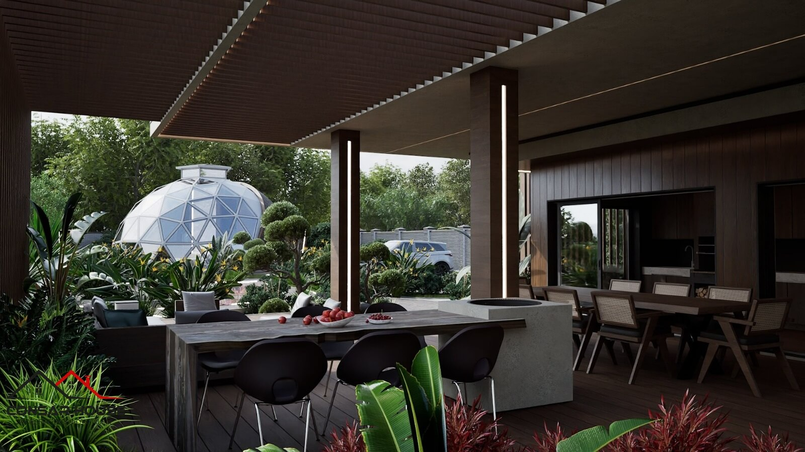
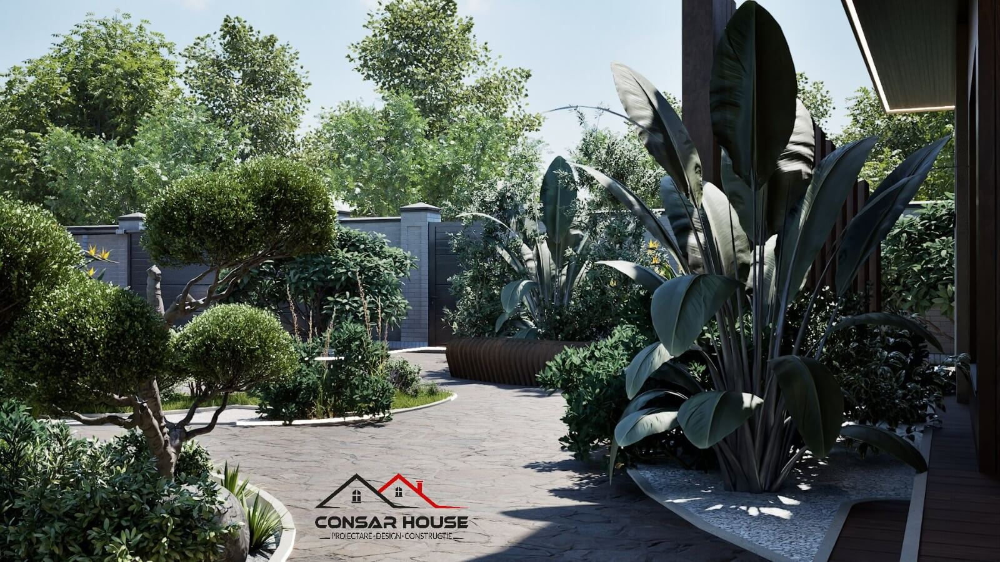
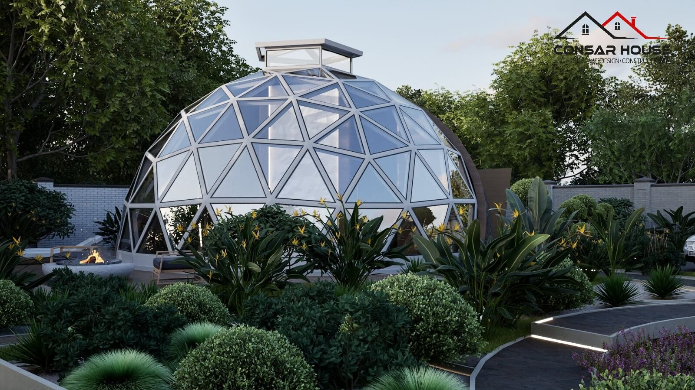
Turul virtual și atmosfera proiectului
Prezentarea
Cinematică
Urmărește animația 3D walkthrough pentru a descoperi dinamica luminii pe parcursul unei zile, conexiunile vizuale între etaje și relația dintre spațiile interioare și terasele exterioare.
Compartimentare eficientă și design interior
Interiorul
Proiectului
Parterul reunește zona de zi — living, dining și bucătărie open-space — iar etajul găzduiește zona privată cu trei dormitoare, două băi și un birou. Separarea pe verticală între zona socială (parter) și cea de noapte (etaj) asigură intimitatea acustică fără a compromite fluiditatea spațială.
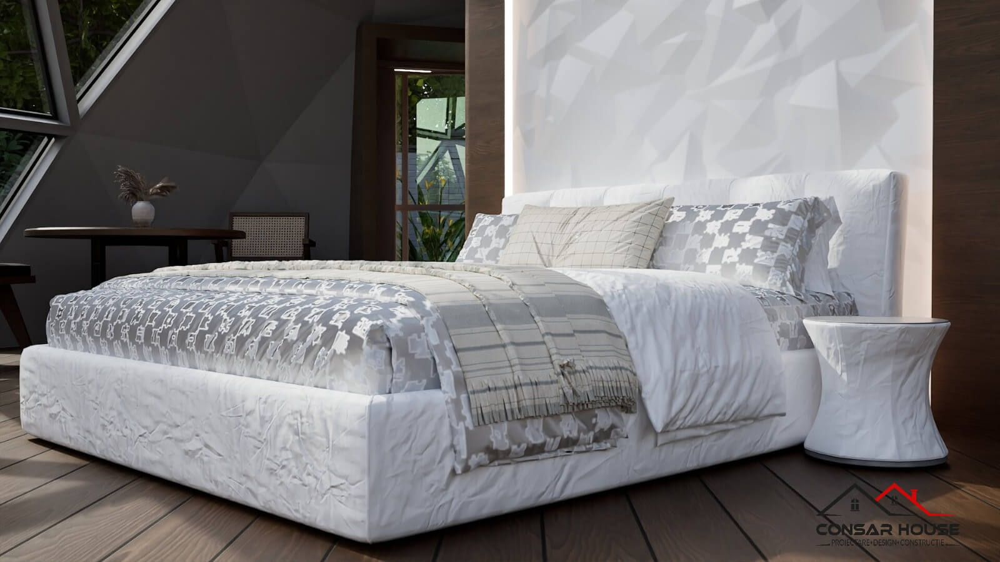
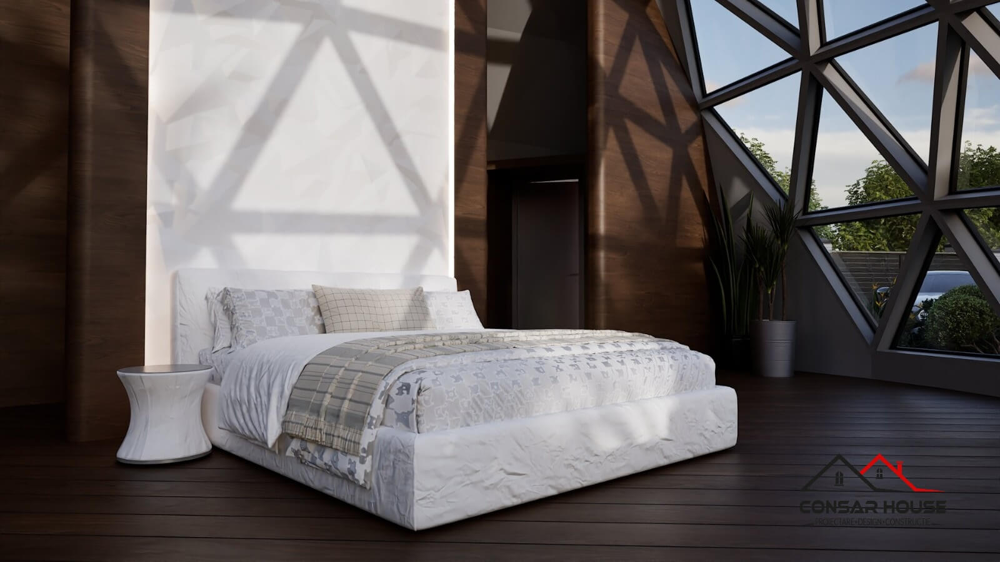
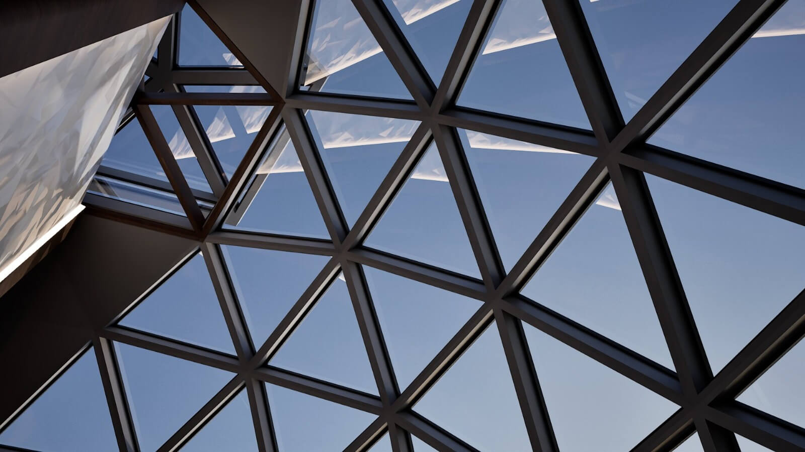
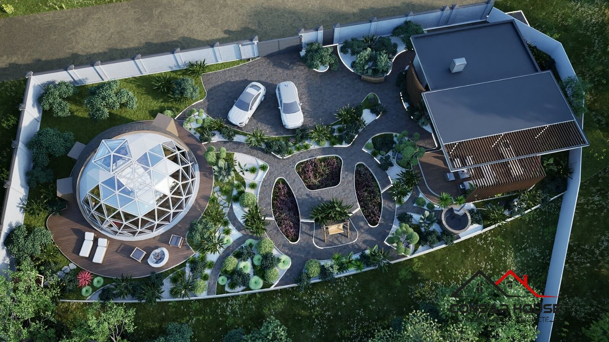
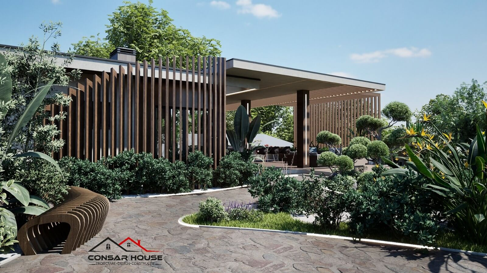
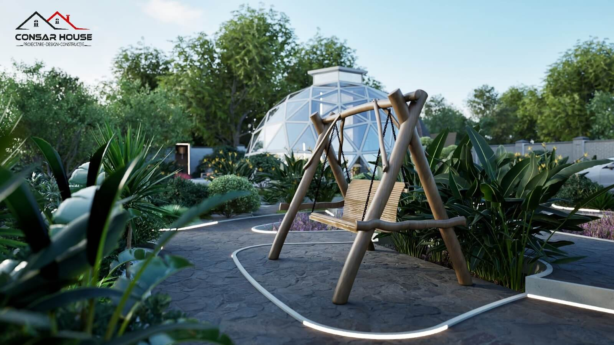
De la schița inițială la planul de execuție
Desene Tehnice
și Documentație
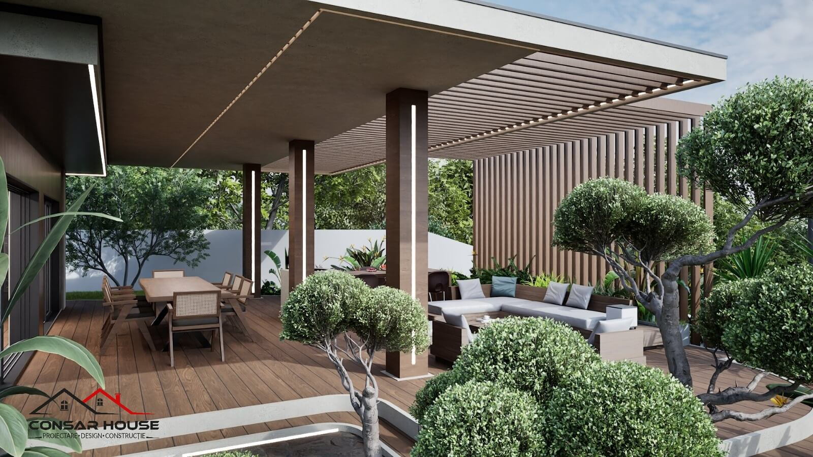
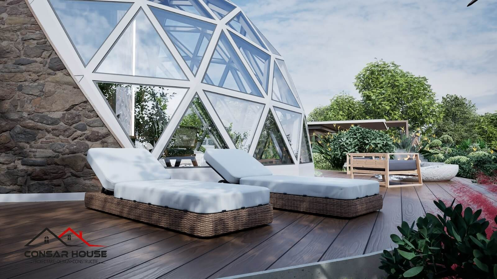
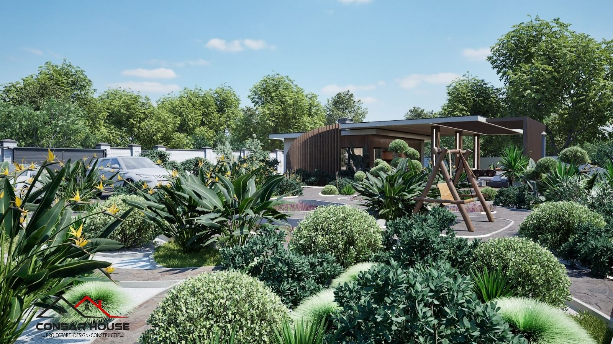
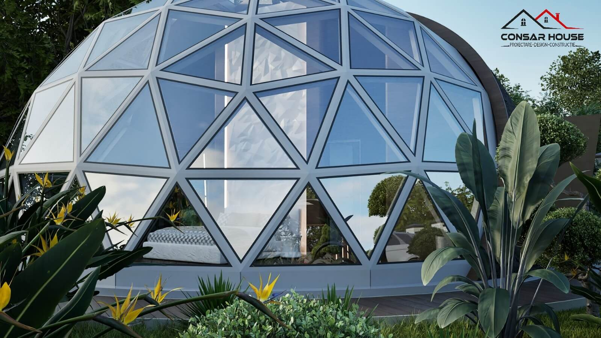
Documentația include soluții de izolație perimetrală cu polistiren extrudat de 20 cm, înălțime liberă de 2,80 m la ambele niveluri și adaptări structurale — grinzi metalice mascate — care susțin vitrajele generoase de pe fațada sudică, fără stâlpi vizibili.
Eficiență energetică și tehnologii propuse
Sustenabilitate
și Eficiență
Izolație termică
Anvelopă continuă din polistiren expandat grafitat de 20 cm la pereți și 30 cm la terasă, eliminând punțile termice. Ferestre tripan cu transmitanță termică de 0,7 W/m²K.
Sistem de încălzire/răcire
Pompă de căldură aer-apă cu aport de panouri fotovoltaice de 6 kW, încălzire în pardoseală la parter și ventilație mecanică cu recuperare de căldură.
Managementul luminii
Suprafața vitrată a fost calibrată pe simulări de însorire: 35% din fațada sudică asigură aport solar optim iarna, iar consola de 1,20 m protejează împotriva supraîncălzirii estivale.
Fiecare proiect începe cu o discuție sinceră despre nevoi, constrângeri și posibilități. Restul este planificare.
Îți dorești un concept adaptat nevoilor tale?
Planificarea riguroasă a unui proiect este cheia unei construcții de succes, fără bugete depășite și fără erori pe șantier. Stabilim o consultanță inițială pentru proiectul tău?